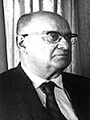

fiche familiale
*******************************************************************************
 |
Berthe Henri décède à l'âge de 78 ans. Naissance le 31 mai 1903 à Ste-Rose-de-Watford Baptême le 31 mai 1903 à Ste-Rose-de-Watford Baptisée Marie Andréa Ida Berthe. Parrain Firmin Provost, marraine Marie Nolin ses grands parents maternels. Son père était absent à son baptème. Décès le 1er mars 1982 à Thetford Mines Funérailles le 4 mars 1982 à Ste-Luce de Disraëli Sépulture au Cimetière de Disraëli Père: Eugène Henri Mère: Graziella Provost (sa famille) |
Mariage le 23 octobre 1928 à St-Jean-L'Évangéliste de Macamic
|  |
Époux: Louis-Ernest Ouellet décède à l'âge de 74 ans. Naissance en 1906 Décès le 25 septembre 1980 à Disraëli. Sépulture au cimetière de Disraëli Père: Edouard Ouellet Mère: Marie Gagnon (sa famille) |
| Enfant 1 Marielle Ouellet décède à l'âge de 58 ans. Naissance: 17 avril 1934 Fille adoptive d'Ernest Ouellet et de Berthe Henry. Décès: 12 sep 1992 à Ville-D'Anjou Sépulture au cimetière Mont-Plaisant de Montréal |
Mariage le 12 août 1953 à St-Odilon du Cap-de-la-Madeleine
Conjoint: Guy Longpré
Père: Lucien Longpré
Mère: Yvette Belland
Enfant 1 Richard Longpré
Enfant 2 Danie Longpré
Conjoint: Kelvin Collymore
Enfant 3 John Longpré
Enfant 4 Dale Longpré
Conjoint de fait vers 1980
Conjoint: Raymond Roy
Enfant 1 Linda Roy-Longpré
Conjoint: Denis Lafrenière
| Conjoint de fait: vers 1985 Conjoint: Roger Longpré décès le 23 mai 1987 à St-Alphonse-de-Rodriguez Frère de Guy, 1er mari de Marielle. Père: Lucien Longpré Mère: Yvette Belland |
Enfant 2 Ghislaine Ouellet
Naissance le 24 mars 1938 à Québec
Fille adoptive d'Ernest Ouellet et Berthe Henry.
-------------------------------------------------------------------------------